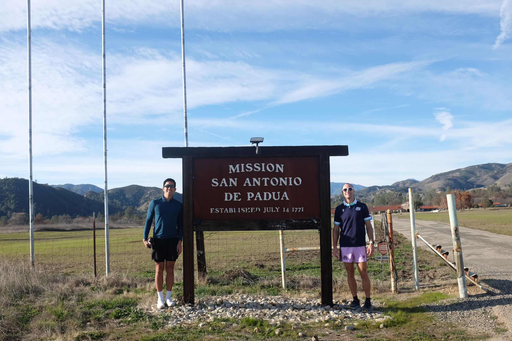
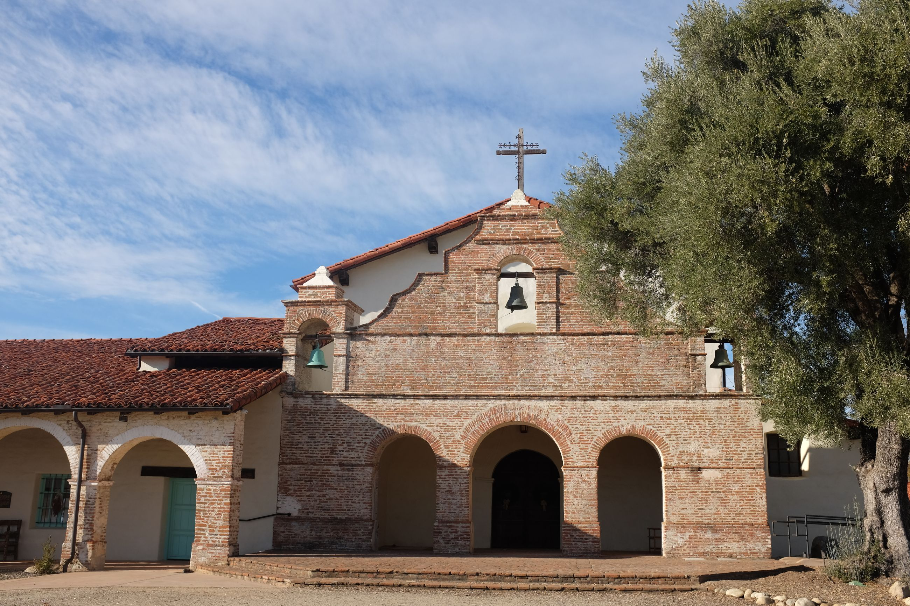
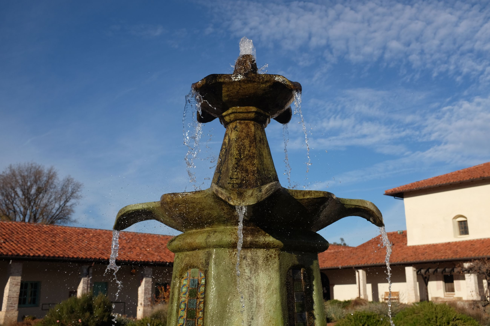
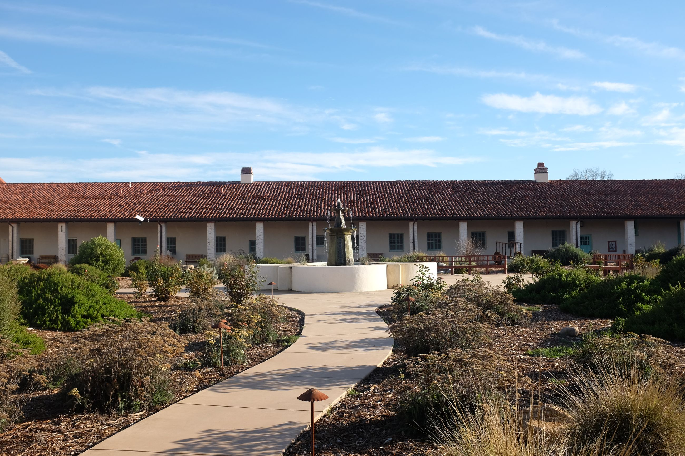
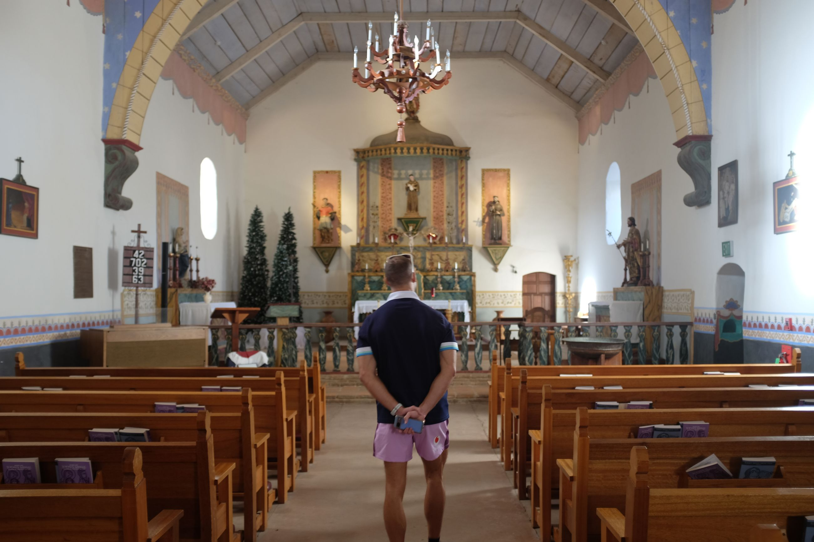

To get into Mission San Antonio de Padua, you enter a US military base. I'm not sure if I'm supposed to be on this road because there's a toll booth ahead that looks official. But no one is manning it and we enter.
A single, paved-road takes you into the valley towards the mountains. A random unpaved veer to the left takes you onto a dirt road that leads you into the Mission.
 
We are greeted by a mousy, over-enthusiastic red head with freckles who smiles and welcomes us. She grew up coming to this church, and was soon to have her wedding here. She happily gave us a brief tour of the grounds. Like all the others, it's peaceful in the courtyard.
  
The preservation of each mission we went to was not one consolidated effort. The Carmel one -- which cost $15 US to enter -- was the most ornate and decorated. This one, San Antonio de Padua, was well refurbished given it was in the middle of nowhere. However, the guidebook cost $5 US and was considered as a donation to the upkeep of the grounds. The gift shop was also a strange collection of random trinkets, as well as their own in-house olive oil. And Soledad had neither an entry fee nor a small tax for its pamphlet, but a detailed museum.
All of them had different reconstruction dates and degrees of reconstruction, dependent on the funding available. It gave each one a personal touch on its curation, both in exterior and interior content. I personally preferred Soledad, whose simple refurbishment and sandy grounds mimicked what I romanticise to be a dusty church in a California valley town.
Anyhow, onwards inland into the wild west gold rush towns.